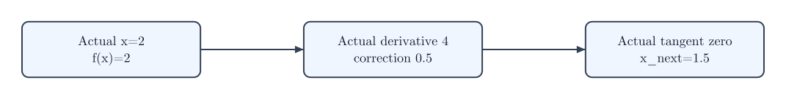
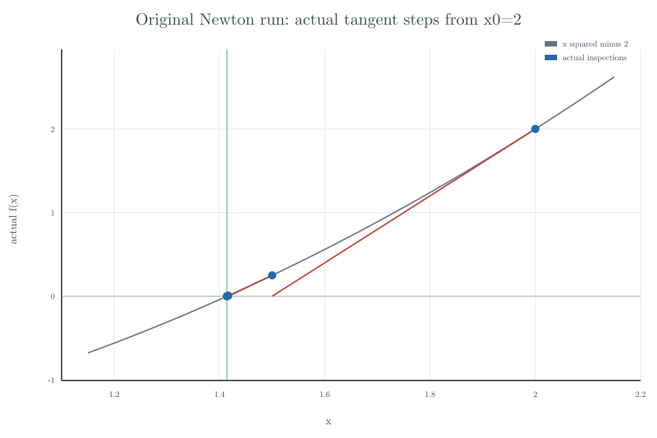
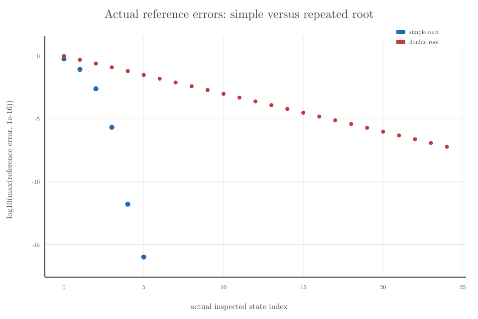
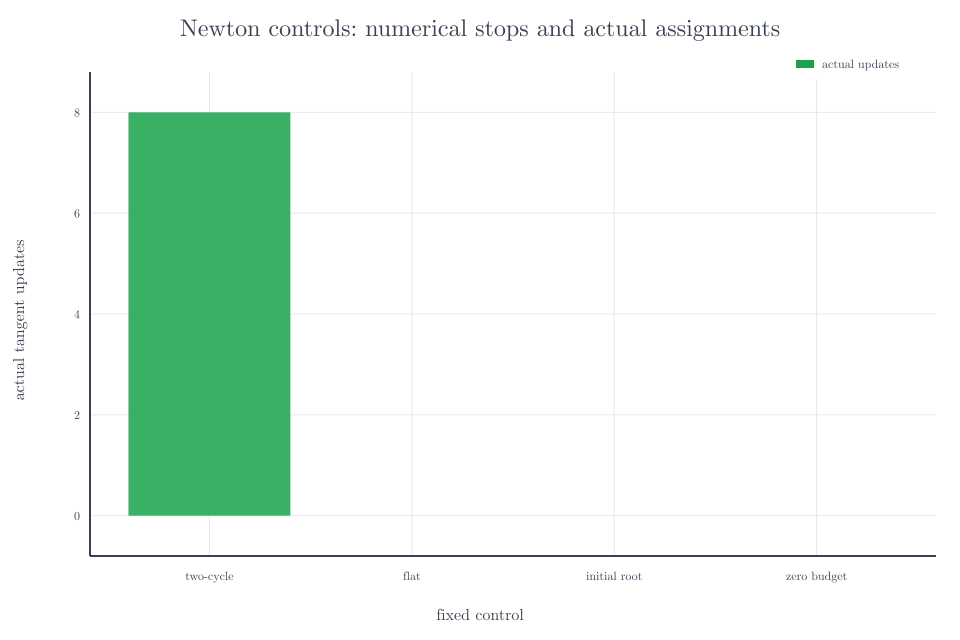

Newton–Raphson root finding
Abstract
Find a scalar root by following tangent-line zeros from a supplied starting point. Actual canonical callback and step records explain the original square-root-of-two experiment without retracing its updates. A repeated root and a bounded two-cycle distinguish local quadratic behavior from a global convergence guarantee, while explicit callback counts clarify the legacy iteration field.
The tangent update and its assumptions
Linearizing f at x gives f(x)+f′(x)(t−x). Its zero is x_next=x−f(x)/f′(x), provided the requested derivative is nonzero. Near a simple root r with sufficient smoothness and f′(r)≠0, Taylor expansion yields e_next≈f″(r)e²/(2f′(r)). This is local quadratic convergence under a suitable starting point, until floating rounding dominates. It is not a guarantee from an arbitrary seed. A root of multiplicity m instead gives leading error factor1−1/m for ordinary Newton, so convergence is typically linear without a multiplicity correction.
The stopping test is the strict absolute residual abs(f(x))<tol. A small residual does not by itself bound distance to a root without additional assumptions such as a suitable derivative lower bound. The supplied derivative must describe the function; the API cannot validate that mathematical relation from isolated callback values.
One hand-checkable tangent
For f(x)=x²−2 at x=2, the actual f value is2 and derivative4, giving the actual next point1.5. Every number in the diagram reads the first canonical step record. The native trace records f and derivative calls in their original sequential order; no report-side Newton loop is used.
#include <dm/dm.hpp>
int main() {
std::filesystem::create_directories("build");
auto s = dm::algorithms::newton_raphson_square_study();
auto a = s.trace.steps.front();
dm::graphics::Diagram d;
d.node("point", {0, 0}, std::format("Actual x={}\nf(x)={}", a.x, a.fx));
d.node("slope", {6, 0},
std::format("Actual derivative {}\ncorrection {}", a.derivative,
a.correction));
d.node("next", {12, 0},
std::format("Actual tangent zero\nx_next={}", a.next));
d.edge("point", "slope").edge("slope", "next");
std::print("First actual update: {} - {} / {} = {}.\n", a.x, a.fx,
a.derivative, a.next);
d.save_svg("build/newton_tiny.svg");
}First actual update: 2 - 2 / 4 = 1.5.

Retain the original sqrt(2) run and tangent figure
The original controls are x0=2, default tolerance10⁻¹⁰ and update cap100. The native study returns its actual inspected points, f values and tangent crossings, together with a fixed display grid for x²−2. At default tolerance it performs four assignments and five residual inspections. The final residual is small enough for that tolerance, but the original assertion that four updates already give full binary64 precision is too strong. The program prints the actual error against native sqrt(2) rather than assuming a number of correct digits.
The legacy RootResult.iterations field counts one-based loop inspections, so it reports five for this run, including the accepted final inspection. It is distinct from the new actual updates counter. An initially accepted root reports one legacy iteration and zero updates when the budget is positive. Exhausting the budget performs a final f callback at the last assigned point, including a zero-budget call at x0.
#include <dm/dm.hpp>
int main() {
std::filesystem::create_directories("build");
auto s = dm::algorithms::newton_raphson_square_study();
std::print("| actual inspected state | actual x | actual f(x) | reference x error |\n| ---: | ---: | " "---: | ---: |\n");
for (std::size_t i = 0; i < s.states.size(); ++i)
std::print("| {} | {} | {} | {} |\n", i, s.states[i], s.values[i],
s.reference_errors[i]);
auto p = dm::graphics::RPlot::create();
p.lines(s.curve_x, s.curve_y, "x squared minus 2", {100, 116, 139}).segments(s.tangent_x, s.tangent_y, s.tangent_next, std::vector<double>(s.tangent_next.size(), 0), {192, 59, 50}, 2).points(s.states, s.values, "actual inspections", {36, 105, 172}, 6).abline_h(0, {148, 163, 184}, 1).abline_v(s.reference, {22, 163, 74}, 1).title("Original Newton run: actual tangent steps from x0=2").x_label("x").y_label("actual f(x)").save_svg("build/newton_original.svg");
auto r = s.trace.run;
std::print("\nLegacy iterations {}; actual updates {}; f calls {}; derivative calls {}; actual stop " "{}.\n",
r.result.iterations, r.updates, r.function_calls,
r.derivative_calls,
dm::algorithms::newton_raphson_stop_name(r.stop));
}| actual inspected state | actual x | actual f(x) | reference x error |
|---|---|---|---|
| 0 | 2 | 2 | 0.5857864376269049 |
| 1 | 1.5 | 0.25 | 0.08578643762690485 |
| 2 | 1.4166666666666667 | 0.006944444444444642 | 0.002453104293571595 |
| 3 | 1.4142156862745099 | 6.007304882871267e-06 | 2.1239014147411694e-06 |
| 4 | 1.4142135623746899 | 4.510614104447086e-12 | 1.5947243525715749e-12 |
Legacy iterations 5; actual updates 4; f calls 5; derivative calls 4; actual stop residual.

Simple and repeated roots have different local rates
The next fixed experiments use x0=2 and tolerance10⁻¹⁴. The simple-root function is x²−2, with reference sqrt(2). The repeated-root control is(x−1)² with derivative2(x−1), reference1. Its exact-arithmetic error halves on every update, illustrating the multiplicity-two factor rather than quadratic convergence. All plotted errors read actual inspected x values; no extra update loop is run. Displaying log10(max(error,10⁻¹⁶)) makes the rounding floor explicit and is not a measured extra iteration.
#include <dm/dm.hpp>
int main() {
std::filesystem::create_directories("build");
auto simple = dm::algorithms::newton_raphson_square_study(2, 1e-14, 100);
auto repeated = dm::algorithms::newton_raphson_trace([](double x) {
return (x - 1) * (x - 1);
}, [](double x) {
return 2 * (x - 1);
}, 2, 1e-14, 100);
auto p = dm::graphics::RPlot::create();
std::vector<double> x, y;
for (std::size_t i = 0; i < simple.states.size(); ++i) {
x.push_back(i);
y.push_back(std::log10(std::max(simple.reference_errors[i], 1e-16)));
}
p.points(x, y, "simple root", {36, 105, 172}, 5);
x.clear();
y.clear();
for (std::size_t i = 0; i < repeated.steps.size(); ++i) {
x.push_back(i);
y.push_back(std::log10(std::max(std::abs(repeated.steps[i].x - 1), 1e-16)));
}
p.points(x, y, "double root", {192, 59, 50}, 4).title(
"Actual reference errors: simple versus repeated root").x_label(
"actual inspected state index").y_label("log10(max(reference error, 1e-16))").save_svg("build/newton_rates.svg");
std::print("| function | actual updates | final residual | final reference error |\n| --- | ---: | ---: " "| ---: |\n| x squared minus2 | {} | {} | {} |\n| squared distance to1 | {} | {} | {} |\n",
simple.trace.run.updates, simple.trace.run.result.residual,
simple.reference_errors.back(), repeated.run.updates,
repeated.run.result.residual,
std::abs(repeated.run.result.root - 1));
}| function | actual updates | final residual | final reference error |
|---|---|---|---|
| x squared minus2 | 5 | 4.440892098500626e-16 | 0 |
| squared distance to1 | 24 | 3.552713678800501e-15 | 5.960464477539063e-08 |

Flat derivatives, a two-cycle and zero-budget controls
For x³−2x+2 starting at0, Newton alternates exactly between0 and1 in this arithmetic. A cap of eight updates ends without residual convergence. For x²−2 starting at0, the nonzero residual and exactly zero derivative stop before division. Neither failure proves that a root does not exist. Initial-root and zero-budget cases demonstrate the actual callback schedule independently of any asymptotic rate claim.
#include <dm/dm.hpp>
int main() {
std::filesystem::create_directories("build");
using F = std::function<double(double)>;
struct Case {
std::string name;
F f, df;
double seed;
int cap;
};
std::vector<Case> cases{{"two-cycle", [](double x) {
return x * x * x - 2 * x + 2;
}, [](double x) {
return 3 * x * x - 2;
}, 0, 8}, {"flat", [](double x) {
return x * x - 2;
}, [](double x) {
return 2 * x;
}, 0, 100}, {"initial root", [](double x) {
return x - 1;
}, [](double) {
return 1.;
}, 1, 100}, {"zero budget", [](double x) {
return x * x - 2;
}, [](double x) { return 2 * x; }, 2, 0}};
std::vector<std::string> labels;
std::vector<double> updates;
std::print("| control | actual stop | converged | actual f calls | actual derivative calls | actual " "updates |\n| --- | --- | --- | ---: | ---: | ---: |\n");
for (auto &c : cases) {
auto r =
dm::algorithms::newton_raphson_run(c.f, c.df, c.seed, 1e-10, c.cap);
labels.push_back(c.name);
updates.push_back(r.updates);
std::print("| {} | {} | {} | {} | {} | {} |\n", c.name,
dm::algorithms::newton_raphson_stop_name(r.stop),
r.result.converged, r.function_calls, r.derivative_calls,
r.updates);
}
auto p = dm::graphics::RPlot::barplot(updates, labels, "actual updates");
p.title("Newton controls: numerical stops and actual assignments").x_label(
"fixed control").y_label("actual tangent updates").save_svg(
"build/newton_controls.svg");
}| control | actual stop | converged | actual f calls | actual derivative calls | actual updates |
|---|---|---|---|---|---|
| two-cycle | iteration-limit | false | 9 | 8 | 8 |
| flat | zero-derivative | false | 1 | 1 | 0 |
| initial root | residual | true | 1 | 0 | 0 |
| zero budget | iteration-limit | false | 1 | 0 | 0 |

Complete guards, cost and references
Both callbacks, finite starting point and finite nonnegative tolerance are validated before any callback. The update cap must be nonnegative and below INT_MAX. Tolerance zero disables the strict residual acceptance test. A nonfinite f or derivative return throws a domain error; a nonfinite quotient or assigned point throws an overflow error. Callback exceptions propagate unchanged. Small nonzero derivatives are not silently thresholded, and there is no hidden damping or bracket.
The ordinary producer uses O(I) work plus actual callback costs and O(1) driver storage. The owned trace retains three input controls plus one fixed record per actual callback and inspection, exactly3+calls+inspections logical units. The default1000000-unit quota is admitted online before the corresponding record/callback, zero disables; later failure returns no partial trace but cannot undo earlier callback effects. This is not a byte or peak-memory claim.
NIST DLMF, §3.8, Nonlinear Equations provides the numerical-method context and local convergence distinctions. The actual tangent geometry, repeated-root control and bounded cycle make the implemented stopping behavior observable without treating a residual threshold or a fixed iteration count as a global accuracy certificate.
Verification
This ten-report batch passes75 CTest cases,22 directly instrumented ASan/UBSan
cases,122 compiled and executed public examples,538/538 scoped documentation
definitions and ten representative clangd hovers. Independent Python
arbitrary-precision arithmetic verifies69365 captured division records
with656460 checks; native independent polynomial, geometry, finite-range, graph,
ranking and callback checks cover the remaining producers. Frozen valid-input
comparisons preserve Neville recurrences, Newton result/callback paths, complete
byte encodings, switch routes and NSGA-II complete objective-call
sequences/final fronts. Ten checkout headers and ten byte-identical installed
development headers compile independently; an installed-header native consumer
links and runs. All40 complete programs execute, and40 native figures have been
visually reviewed; HTML/Markdown exports preserve computed rows/prose and
identical image bytes. Checks are scoped native checks, not an installation
claim for every language binding. Receipts:
build/mepml-conversion/batch-254-263/.